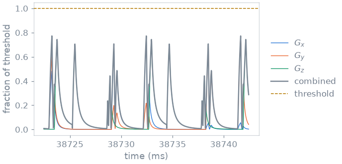
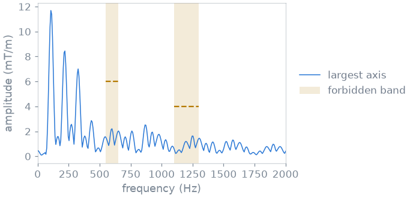

Note
Go to the end to download the full example code.
7. Hardware and safety checks#
A sequence that passes check_timing is one the scanner can play, block by
block. Whether it should is a question about the whole scan: does any gradient
exceed the amplitude or slew-rate limit once it is rotated, does the switching
stimulate peripheral nerves, does the gradient waveform drive the coil at one
of its mechanical resonances, how much RF power does the subject absorb.
pypulseqpp computes each of these from the sequence, and this lesson runs them
on your MPRAGE.
A passing check does not establish that a sequence is safe to run on a scanner or on a subject. The PNS, mechanical-resonance and SAR models used here are synthetic demonstrations. Scanner-specific checks and hardware monitoring are separate.
Learning objectives
Check gradient amplitude, slew rate and continuity on the played (rotated) waveforms.
Compute the peripheral nerve stimulation response, and see where it peaks.
Compare the gradient spectrum with the coil’s forbidden bands.
Estimate SAR with a set of virtual observation points.
Previous: 6. Radial MPRAGE. Next: 8. Sequence functions, where your MPRAGE becomes a function of its protocol.
Test sequence#
pypulseqpp ships a complete version of the MPRAGE you built in lesson 6,
mprage_stack_of_stars3D.
You call it with your scanner and your protocol: 220 mm and 128 in-plane,
16 partitions over 80 mm, one inversion every 2.5 s. ry=3 plays every
third spoke of the 202 a fully sampled plane needs, so 68 per inversion, as
in lesson 6. How a shipped sequence takes its protocol is the subject of the
next lesson.
import pypulseqpp as pp
from pypulseqpp import safety, sequences
system = pp.Opts(
max_grad=32.0,
grad_unit="mT/m",
max_slew=130.0,
slew_unit="T/m/s",
rf_dead_time=100e-6,
rf_ringdown_time=20e-6,
adc_dead_time=10e-6,
)
protocol = {
"fov": 220e-3,
"n": 128,
"fov_z": 80e-3,
"n_z": 16,
"ry": 3,
"tr": 2.5,
"flip_angle_deg": 8.0,
"n_dummy": 0,
}
seq = sequences.mprage_stack_of_stars3D_sequence(system, **protocol)
ok, errors = seq.check_timing()
print(f"timing ok: {ok}, scan time {seq.duration()[0]:.1f} s")
timing ok: True, scan time 40.0 s
Gradient amplitude, slew rate, continuity#
Every spoke is the readout rotated in the plane, so each axis plays a
different share of it. The checks look at the gradients as played, after
each block’s rotation, and compare them with system. They report the
largest value on any one axis, which is what the hardware limits apply to,
and the largest vector value, which is not the norm of the per-axis peaks
because the axes peak at different times. The continuity check looks for a
gradient that jumps between two blocks, which the scanner cannot play.
grad_ok, grad = safety.check_max_grad(seq)
slew_ok, slew = safety.check_max_slew(seq)
cont_ok, cont = safety.check_grad_continuity(seq)
mT_per_m = 1e3 / system.gamma
print(
f"amplitude: largest {grad.per_axis.value * mT_per_m:.1f} mT/m on "
f"{grad.per_axis.axis}, vector {grad.vector.value * mT_per_m:.1f} mT/m, "
f"limit {grad.limit * mT_per_m:.0f} mT/m"
)
print(
f"slew rate: largest {slew.per_axis.value / system.gamma:.0f} T/m/s, "
f"limit {slew.limit / system.gamma:.0f} T/m/s"
)
print(f"continuity: {len(cont.discontinuities)} jumps")
amplitude: largest 31.4 mT/m on z, vector 31.4 mT/m, limit 32 mT/m
slew rate: largest 121 T/m/s, limit 130 T/m/s
continuity: 0 jumps
Peripheral nerve stimulation#
A switching gradient induces an electric field in the body, which can stimulate peripheral nerves. The nerve model turns the slew rate on each axis into a response, as a fraction of the stimulation threshold; the axes are combined as a root sum of squares, and the check passes while the combined response stays below 1.
The model here is a chronaxie model with three textbook coefficients. A scanner supplies its own model, which you read from its file.
model = safety.ChronaxieModel(chronaxie=334e-6, rheobase=23.4, alpha=0.333)
pns_ok, pns = safety.check_pns(seq, model, trace=True)
print(
f"peak {pns.peak.value:.2f} of threshold at {pns.peak.time:.3f} s, "
f"in block {pns.peak.block}"
)
peak 0.79 of threshold at 38.732 s, in block 4286
With trace=True the check also returns the response over time, so you
can see where the peak comes from. The figure shows the spokes around it.

The response peaks on the ramps of the merged readout and spoiler, where the slew rate is highest. Your MPRAGE stays below the threshold.
Mechanical resonance#
A gradient coil is a mechanical structure, and it has resonances: frequency bands where a gradient waveform makes it vibrate strongly. Scanners forbid those bands, each with a tolerance on the gradient amplitude it may carry.
In this example the coil has two, 550 to 650 Hz at 6 mT/m and 1100 to 1300 Hz at 4 mT/m. The check computes the spectrum of the gradients in windows of 50 ms along the scan, and counts the windows where a band exceeds its tolerance:
bands = [
safety.ForbiddenBand(axis=None, f_min=550.0, f_max=650.0, tolerance=6.0),
safety.ForbiddenBand(axis=None, f_min=1100.0, f_max=1300.0, tolerance=4.0),
]
mech_ok, mech = safety.check_mech_resonance(seq, bands, window_width=50e-3)
for band in mech.bands:
print(
f"{band.peak:.1f} mT/m at {band.frequency:.0f} Hz, "
f"{band.violations} windows over the tolerance"
)
2.2 mT/m at 600 Hz, 0 windows over the tolerance
1.6 mT/m at 1253 Hz, 0 windows over the tolerance
The spectrum of the window where the first band peaks:

Each spoke points in a different direction, so the train does not repeat the same waveform on any one axis, and its energy is spread over the spectrum rather than concentrated in a few lines. A Cartesian or EPI train repeats the same gradients every TR or every echo, and its spectrum is a comb at that rate and its harmonics: there, a forbidden band is avoided by changing the echo spacing so that no tooth falls in it.
Specific absorption rate#
The RF pulses deposit power in the subject, measured as the specific absorption rate, in W/kg. The check uses virtual observation points (VOPs), a compressed model of the local SAR of a coil, and averages the power over the sequence’s repeating unit. The inversion pulse dominates it: 10 ms of adiabatic sweep, against the 8 degree excitations.
example_vops() is a synthetic model: it has the
shape of a real one, and its numbers mean nothing about any coil or any
subject. A real one is read from a file with
read_vops().
demonstration = safety.example_vops()
sar_ok, sar = safety.check_sar(
seq,
demonstration.model,
drive_per_hz=demonstration.drive_per_hz,
default_shim=demonstration.cp_shim,
)
print(
f"local {sar.worst_local.sar:.2f} W/kg (limit {sar.local_limit}), "
f"global {sar.worst_global.sar:.2f} W/kg (limit {sar.global_limit})"
)
local 0.33 W/kg (limit 10.0), global 0.18 W/kg (limit 3.2)
Check summary#
timing pass 0 errors
gradient amplitude pass 31.4 mT/m
slew rate pass 121 T/m/s
gradient continuity pass 0 jumps
nerve stimulation pass 0.79 of threshold
mechanical resonance pass 0 windows over
SAR pass 0.33 W/kg local
How each model works is explained in Safety checks.
Specification#
What this lesson built, stated the way you would ask an agent for it:
Run pypulseqpp's checks on mprage_stack_of_stars3D_sequence (220 mm,
128 matrix, 16 partitions over 80 mm, ry=3, TR 2.5 s, 8 degrees) for a
32 mT/m, 130 T/m/s scanner: check_timing, check_max_grad,
check_max_slew, check_grad_continuity, check_pns with a chronaxie model
(334 us, 23.4 T/s, 0.333), check_mech_resonance against 550-650 Hz at
6 mT/m and 1100-1300 Hz at 4 mT/m in 50 ms windows, and check_sar with
example_vops. Plot the gradient spectrum against the bands, and print
every verdict.
Total running time of the script: (0 minutes 0.530 seconds)